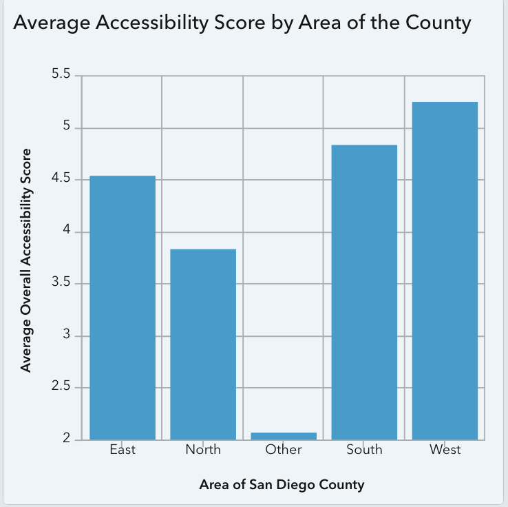

Average Transit Stop Accessibility
More than 6,000 transit stops were evaluated across San Diego County using a standardized accessibility index.
Key Findings
Countywide Accessibility
Accessibility varies across individual transit stops. The interactive dashboard allows users to explore stop-level scores and identify areas for further investigation.
Interactive accessibility dashboard showing transit stop scores across San Diego County.
Regional & City Patterns

Average accessibility scores by geographic area/city.
South Bay was not the lowest
Our initial expectation that the South Bay, including Chula Vista, would have particularly low accessibility was not supported. Chula Vista ranked sixth in the city-level comparison.
Accessibility varies by location
Differences between regions and cities show why countywide averages alone are not enough to identify where improvements may be needed.
The analysis provides a baseline for understanding transit-stop accessibility across San Diego County. Rather than treating every stop equally, the accessibility index helps identify individual locations and areas that may warrant additional investigation or infrastructure investment.